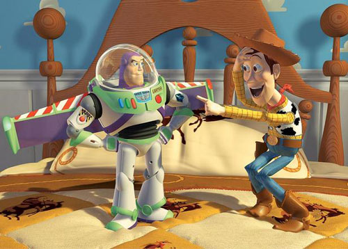

30 变形金刚THE TRANSFORMERS: THE MOVIET（1986年动画电影版）
在这版1986年的《变形金刚》（THE TRANSFORMERS: THE MOVIE）里，故事开始在未来世界的2005年，擎天柱（Optimus Prime）和霸天虎（the Decepticons）的对决第一次在银幕上和观众见面，而变形金刚的这次华丽亮相，不知道征服了多少影迷的心啊！今年夏天，《变形金刚2》正在火热上映，喜欢变形金刚的你可千万不要错过啊！
29 辛普森大电影 THE SIMPSONS MOVIE（2007年电影版）
《辛普森一家》是美国电视史上的奇迹，它恶搞而不失深刻，是美国电视史上播放时间最长最受欢迎卡通，叱咤电视屏幕18年之久，曾经获得《时代》周刊提名“20世纪最伟大的电视节目”，总计得到过近百座电视剧大奖。2007年这部常青热播剧登上大银幕，向观众讲述了辛普森一家的爆笑离奇经历。别看只有87分钟，标志性角色可是一个也不少—变异的松鼠，加州州长施瓦辛格，蛛猪还有贯穿全片的美国热门乐队Green Day。
28 快乐的大脚HAPPY FEET（2006）
简单的说，奥斯卡获奖动画片《快乐的大脚》（HAPPY FEET）其实就是《帝企鹅日记》（March of the Penguins）的踢踏舞版。
27 冰川时代2：冰川消融ICE AGE: THE MELTDOWN（2006）
蓝天工作室（Blue Sky）的《冰川时代2：冰川消融》（ICE AGE: THE MELTDOWN）沿袭了第一部的搞笑又温情的风格，在这一部里，我们能再一次看到熟悉的朋友—史前最后一头猛犸象的曼尼（Manny），树獭席德（Sid）和剑齿虎迭哥（Diego），当然还有那个愿意为榛子上刀山下火海的松鼠斯科特（Scrat）。
26 怪物史莱克2 SHREK（2004）
在爆笑恶搞大片《怪物史莱克2》（SHREK）中，史莱克拜见了不喜欢他的岳父岳母大人，遇见了逢人便装可爱的新伙伴靴猫，经历了爱情危机，但是最终还是传统完美大结局—王子公主快乐地生活在一起，不过只要快乐就好了，谁规定王子一定英俊潇洒骑白马呢？
25 灰姑娘CINDERELLA （1950）
《灰姑娘》（CINDERELLA）也许将永远成为女孩心中带有梦话色彩的故事，这个家喻户晓的故事太深入人心了…呃，不过以防你没看过，这个麻雀变凤凰主题的电影讲述了一个侍女是如何在会唱歌的老鼠和会变魔法仙女的帮助下，坐着神奇的南瓜马车赶赴舞会，成功被王子选中成为王妃。不过总觉得灰姑娘的水晶鞋太诡异了，本来是很合脚的，为什么会在舞会后匆匆逃走时掉下来呢？
24 超人总动员THE INCREDIBLES （2005）
拿下奥斯卡金像奖的导演布拉德·伯德（Brad Bird）想用《超人总动员》（THE INCREDIBLES）向我们展示一个简单的道理—超人也是人，也有烦恼：中年超人有中年工作家庭烦恼，超人妈妈有更年期烦恼，青春期超人女儿有爱情烦恼，小小超人少年有自我认同烦恼，还有婴儿超人，它的一举一动都是家人的烦恼。不过只要一家人相亲相爱，一切终将逢凶化吉，万事如意。
23 汽车总动员 CARS （2006）
皮克斯（PIXAR）公司的又一部总动员类型大卖电影《汽车总动员》（CARS）。看动画片的一大好处就是：你会发现几乎所有的东西都有感情，都会说话，而且还都会经历一些人生坎坷学到生活的道理。看完《汽车总动员》（CARS）走出电影院，你会不会想要跟自己的车聊一聊呢？
22 怪物史莱克 SHREK（2001）
梦工厂（DREAMWORKS）的动画作品《怪物史莱克》（SHREK）将梦工厂推向了事业的一个高峰，也使得史莱克成为了自青蛙柯密特（Kermit the Frog）以来最为著名的绿色肤色电影明星，在种族多元化的好莱坞，史莱克代表了一种潮流一种进步。
21小姐与流浪汉 LADY AND THE TRAMP（1955）
《小姐与流浪汉》（LADY AND THE TRAMP）是迪斯尼出品的第15部经典动画长片,这部1955年推出的经典佳作讲述了两只狗的浪漫爱情，最经典的镜头莫过于它们在餐馆一起吃通心面，同吃一条通心面的它们最终亲热地接吻了。这段颇有创意的内容是由迪斯尼元老级动画家弗兰克·托马斯（Frank Thomas）提出的，他观察他养的两只狗吃食物时的情景，构思到本片这个画面的灵感，而这一段让人看过本片后都颇为难忘。
20 怪物公司 MONSTERS INC （2001）
皮克斯公司（PIXAR）的《怪物公司》（MONSTERS INC）触动了孩子们心里的小小恐惧神经—夜深人静，悄悄打开壁柜，却发现在壁柜角落里有一个绿色的怪物！害怕吗？看过这部《怪物公司》就不要害怕啦，因为它会告诉你，其实小怪物想要的是你的笑声。
19 花木兰MULAN （1998）
为了救自己的父亲，木兰女扮男装，替父出征，经历千难万险，终于衣锦还乡。想想吧，这个父亲节，你为父亲做了些什么呢？
18小小美人鱼 THE LITTLE MERMAID（1989）
这部《小小美人鱼》（THE LITTLE MERMAID）包含了迪斯尼公司动画的经典要素：勇气十足的女主人公，狡猾奸诈的恶棍，坚定不移的爱情信念，还有无数轻快的旋律。
17 怪兽大战外星人MONSTERS VS. ALIENS （2009）
从电影名上我们就可以猜出故事情节是什么样子的—勇敢的怪兽团结在一起，为了拯救地球，为了挽救人类的生存，为了世界的和平，于邪恶的外星人展开了激烈的战斗！故事结局几乎也可以预言了：怪兽们经历了千难万险，终于赢得了胜利，他们拯救了地球！！！
16 阿拉丁ALADDIN（1992）
《阿拉丁》（ALADDIN）是迪士尼公司的第31部卡通长片。在这部影片中，最出彩的不是两位爱恋绵绵的男女主角，而是由罗宾·威廉姆斯（Robin Williams）配音的妙语连珠的灯神，也是从这部电影开始，电影明星为动画片配音成为了一种潮流，在此后的《怪物史莱克》《玩具总动员》《怪物公司》中，我们总能听到熟悉的电影明星的声音。
15 鬼妈妈CORALINE （2009）
以《圣诞夜惊魂》声名鹊起的导演亨利·塞里克（Henry Selick）执导的2009年动画新片《鬼妈妈》（CORALINE），他将《圣诞夜惊魂》中的定格动画技术再次运用到《鬼妈妈》中，使得后者称为目前好莱坞史上最长的定格动画。这部电影改编自英国作家尼尔·盖曼的同名作品《鬼妈妈》，它被誉为哥特版的爱丽丝梦游奇境记。故事中所勾勒的世界黑暗而颓废，充满了诡异的色彩，小主人公卡洛琳是个充满天马行空想法的小女孩，而现实中她的生活却是十分无趣，在一个神奇的夜晚，她偶然发现了一个与现实世界一模一样的“镜像世界”！不过，随着时间的流逝，她渐渐发现这个镜像世界并不像最初想象中那么迷人。看吧，小女孩卡洛琳的勇敢冒险就要开始啦！
14 海底总动员 FINDING NEMO（2003）
夏天去海边是消暑的最好选择之一，如果不能成行的话，看看海底清凉世界的故事也不失为上乘之选。2003年的《海底总动员》（FINDING NEMO）不仅仅赢得了飘红的票房，更是横扫各大颁奖礼—它是史上普通级电影中票房冠军，一举拿下四项奥斯卡提名，最终捧走了奥斯卡最佳动画片奖。炎炎夏日又到了，不如再次和家人一起重温这个发生在海洋深处的故事吧，充满亲情、友谊、勇气，更是带给观众湛蓝海水的清凉体验！
13 幽灵公主 PRINCESS MONONOKE （1997）
宫崎骏的动画片远远超出了消遣的性质，这部让人难忘的《幽灵公主》（PRINCESS MONONOKE）隐含着两个深刻的主题—人类与自然，生存与死亡。也许随着看电影的孩子渐渐长大，他会逐渐明白，这部电影所要反映的，不仅仅是环境保护那么简单。
12料理鼠王 RATATOUILLE （2007）
皮克斯公司（PIXAR）真是想象力无敌，他们愣是用冷冰冰不食人间烟火的电脑让一个老鼠成为了世界顶尖大厨，精心地烹饪了各种让人垂涎欲滴的美食，不仅如此，这只五星级大厨还是个有情有义、充满梦想、积极向上的好青年。在这个信息发达的时代，真是一切皆有可能。
11 哈尔的移动城堡HOWL’S MOVING CASTLE （2005）
《哈尔的移动城堡》（HOWL’S MOVING CASTLE）是宫崎骏的代表作之一：变成飞鸟的巫师，有知觉的稻草人以及摇摇欲坠的移动围栏，这一切构成了宫崎骏的奇幻世界。
10 美女与野兽 BEAUTY AND THE BEAST（1991）
聪明善良的妙龄乡村少女+相貌丑陋的坏脾气怪物王子=经典童话爱情故事。故事虽然老套，情节虽然简单，不过依然不妨碍它打动无数人的心。信不信由你，这是第一部也是唯一一部被提名为奥斯卡最佳影片奖的动画片！
9 玩具总动员 TOY STORY（1995）
《玩具总动员》（TOY STORY）是皮克斯公司（PIXAR）历史上—当然了，也是全世界历史上—第一部完全由电脑制作的电影，花了上亿的成本、历时四年才完成，工程浩大叹为观止。这部新技术的里程碑电影具有划时代意义，不过它不只是有先进的技术而已，《玩具总动员》本身就是一部优秀的动画，在这部电影里，主人公不再是非黑即白的标准好人或者标准坏人，他们身上有这样那样的性格缺陷，但是这并不代表他们就是坏人，也不妨碍我们喜爱他们。正如一句英国谚语所说：“你所看到的不是黑与白，而是各种深深浅浅的灰色。”
8圣诞夜惊魂TIM BURTON’S THE NIGHTMARE BEFORE CHRISTMAS （1993）
亨利·塞里克（Henry Selick）的成名作《圣诞夜惊魂》（TIM BURTON’S THE NIGHTMARE BEFORE CHRISTMAS）是一部著名的定格动画。虽然讲述的是圣诞节的故事，不过怎么看怎么觉得像是万圣节啊！
7 龙猫 MY NEIGHBOR TOTORO（1993）
《龙猫》（MY NEIGHBOR TOTORO）也许是宫崎骏所有作品中最为可爱的一部了—调皮的小孩子，身材巨大的胖胖大树精灵，还有风驰电掣的猫型公交车，一切就像梦境一样。
6 狮子王 THE LION KING （1994）
《狮子王》（THE LION KING）是动画版的《哈姆雷特》，莎士比亚戏剧果然常看常新，就算王子变成了小狮子依然令人感动。这部电影是史上最成功的手绘动画，获得两项奥斯卡奖，更是赢得托尼奖最佳音乐剧奖。
5 千与千寻 SPIRITED AWAY（2002）
宫崎骏的《千与千寻》（SPIRITED AWAY）是日本电影史上最卖座的动画片。充满奇幻色彩的世界，超现实的澡堂，形态各异的精灵，还有勇敢善良的小白龙，让孩子和大人一起喜欢上这部动画片。正如宫崎骏所说，他希望通过这样一部电影，送给自己的女儿，也送给天下所有的孩子，陪伴他们一起长大。
4 功夫熊猫KUNG FU PANDA（2008）
谁说国宝只是憨态可掬？看看阿宝吧，这只身材不佳功夫了得的大熊猫可是赫赫有名的龙武士啊！不仅在大银幕上横扫千军，更是在银幕外俘虏了广大影迷的心。据调查，到目前为止，中国电影史上最卖座的动画片就是梦工厂（DREAMWORKS）出品的这部《功夫熊猫》（KUNG FU PANDA）。虽然主创人员在创作期间并没有来过中国，也都没有亲眼见过大熊猫，但是他们却将功夫的精义和熊猫的可爱传神地反映在电影里。除此之外，颇具禅意的乌龟大师，情义深重的师傅，还有各个身怀绝技的五大高手都让人感到浓浓的中国风。做面条的熊猫阿宝实现了他的功夫梦想，师傅大师也终于了断了和太郎的恩怨，不过还有一个问题没有解决：武功高强的熊猫的父亲为啥是卖面条的鸭子呢？
3 闪电狗 BOLT （2008）
《闪电狗》（BOLT）是2008年的票房超级炸弹，这部温馨、搞笑且不乏励志精神的迪斯尼动画新作并没有走以往的老套路，在很多细节处理上充满新意，看来迪斯尼在打算在各大电影公司的围攻中冲出一条新路了。
2 机器人总动员 WALL·E （2008）
皮克斯公司（PIXAR）的电影引进大陆后总会被译成某某总动员，让人担心是不是会落入俗套情节的圈套。不过这次你大可放心，《机器人总动员》（WALL·E）是彻彻底底革新的一部电影，它做出了很多创世纪的革新探索，比如开场22分钟没有任何对话，堪称一绝。据统计，这部电影到目前为止是皮克斯公司反响最好、反映差别最大的一部作品，同时也是最受观众欢迎的电影之一。相信善良痴情的WALL·E，雷厉风行的EVA，还有对清洁工作尽职尽责的MO都给你留下了深刻的印象。
1 飞屋环游记UP （2009）
今年戛纳电影节的开幕电影选定为皮克斯公司（PIXAR）的《飞屋环游记》（UP），据说是取义英文名中的UP向上之意，希望能在经济危机的冲击下开创一条向上的通道。这个由一个丧偶的孤独老爷爷、八岁的叽叽喳喳的冒险少年、罕见的大鸟和会说话的狗组成的探险小组给2009年的大银幕带来了勃勃生气，同时也给我们带来了一次梦想和现实的温情洗礼。